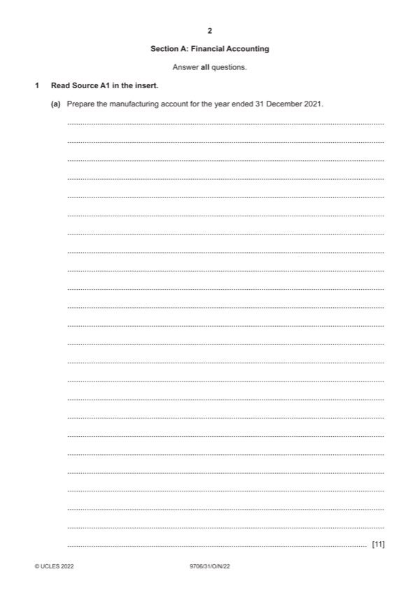

Question 1

Original paper page 2
Part 1(a) — solution
Amit 11
Manufacturing account for the year ended 31 December 2021
$ $
Inventory of raw materials at 1 January 2021 2 810
Purchases of raw materials 81 750
Carriage inwards 400 (1)
Mark points
- Include the ideas shown in the solution above.
Part 1(b) — solution
Answer: 244 350
Amit 9
Income statement for the year ended 31 December 2021
$ $
Revenue 288 830
Inventory of finished goods at 1 January 2021 6 700
Cost of production at transfer price 237 650 (1OF)
244 350
Inventory of finished goods at 31 December 2021 6 900
Cost of sales 237 450 (1)OF
Gross profit 51 380
Factory profit 47 530 (1)OF
Administrative salaries 28 500
Increase in provision for unrealised profit 40 (1)
Rent and rates 3 640 (1)
Depreciation of office equipment 1 710 (1)
Selling and distribution costs 14 700
Administrative expenses 16 100
General expenses 3 060 (1) 67 750
Profit from operations 31 160
Finance costs 1 080 (1)
Profit for the year 30 080 (1)OF
Mark points
- Correct result: 244 350
Part 1(c) — solution
600 m2 (1) 1
Mark points
- Include the ideas shown in the solution above.
Part 1(d) — solution
current assets (1) 1
Mark points
- Include the ideas shown in the solution above.
Part 1(e) — solution
Health and safety of visitors in an area with machinery (1) 3
Possibility of contamination of food stuffs in the factory (1)
Costs of staff to act as guides during the tours (1)
Prices he could charge in the gift shop (1)
Costs of staff to work in the gift shop (1)
Anticipated level of sales in the gift shop (1)
Accept other valid points
Max 3
2022 Page 8 of 17
9706/31 Cambridge International AS & A Level – Mark Scheme October/November 2022
Mark points
- Include the ideas shown in the solution above.
Part 1 — solution
mark for identification and 1 mark for development.
Mark points
- Include the ideas shown in the solution above.
Part 1 — solution
27 } 8 100 (2 000) 6 100
Mark points
- Include the ideas shown in the solution above.
Part 1 — solution
6 100 0.909 5 545 }
Mark points
- Include the ideas shown in the solution above.
Part 1 — solution
6(a)(ii) $ 3
Direct materials (2 8 9 000) 144 000 }(1)
Direct labour (3 10 9 000) 270 000 }
Fixed overhead (3.2 3 9 000) 86 400 (1OF)
Total standard cost 500 400 (1OF)
Mark points
- Include the ideas shown in the solution above.